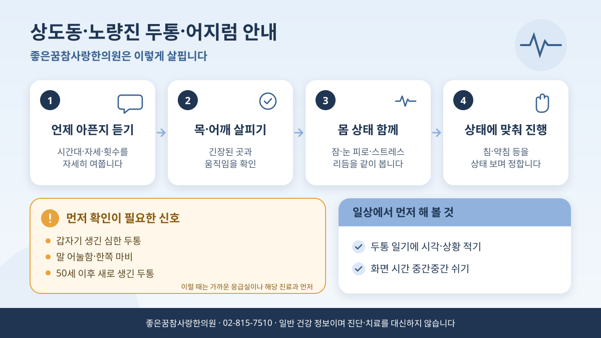
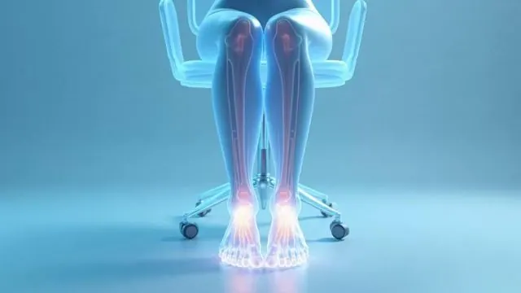
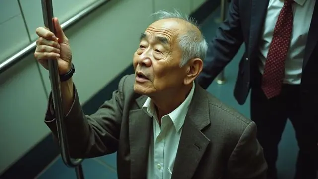
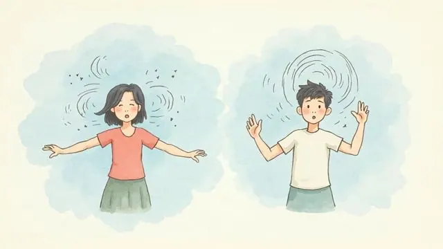

자주 반복되는 두통, 일어설 때나 고개를 돌릴 때의 어지럼, 손발 저림, 이명과 귀 먹먹함, 늘어난 깜빡함이 걱정되는 불편한 분을 위한 안내입니다. 좋은꿈참사랑한의원은 위험 신호가 없는지 먼저 확인한 뒤, 목·어깨의 긴장과 잠, 눈의 피로까지 생활 리듬과 함께 살핍니다.

반복되는 두통·어지럼·저림
목과 어깨가 굳으며 오는 긴장성 두통, 자세를 바꿀 때 잠깐 도는 어지럼, 오래 같은 자세로 있은 뒤의 손발 저림은 일상에서 흔히 겪는 불편입니다. 다만 비슷해 보여도 확인이 급한 경우가 있어 먼저 구분합니다.
두통 하나에도 조이는 듯한지, 욱신거리는지, 한쪽만 아픈지에 따라 살필 점이 다릅니다. 어지럼도 빙 도는지, 붕 뜨는지, 앞이 캄캄해지는지 구체적으로 말씀해 주시면 도움이 됩니다.
이명·귀 먹먹함
귀에서 '삐-' 소리나 바람 소리가 들리는 이명, 귀가 꽉 막힌 듯한 먹먹함은 원인이 다양합니다. 청력 상태와 귀 질환을 먼저 확인하는 것이 중요하기 때문에 이비인후과 검사 결과가 있으면 가져와 주세요.
일부 분들은 턱을 움직이거나 목을 돌릴 때 소리의 양상이 달라지기도 합니다. 그런 경우 목과 턱 주변의 긴장 상태도 함께 살펴봅니다. 이명 때문에 잠을 설치고 예민해지는 분이 많아, 소리뿐 아니라 수면과 일상의 변화도 함께 여쭙습니다.
갑자기 한쪽 귀가 잘 안 들리거나 심한 어지럼이 함께 오면 바로 이비인후과 진료를 받으셔야 합니다.
기억력·인지 건강
나이가 들면서 깜빡하는 일이 늘면 '혹시 치매가 아닐까' 걱정이 됩니다. 기억력이 떨어지는 이유는 노화뿐 아니라 수면 부족, 우울감, 복용약, 갑상선 문제, 신경계 질환 등 여러 가지입니다.
한의원에서는 잠, 소화, 통증처럼 어르신의 일상을 흔드는 문제를 진맥과 함께 살피고 관리합니다. 침이나 한약이 치매를 예방한다고 말씀드리지는 않습니다. 기억력 저하가 일상생활에 지장을 줄 정도라면 치매안심센터나 신경과의 인지기능 검사를 권해 드립니다.
이종호 대표원장은 동작구 어르신 대상 보건사업에 참여해 지역 어르신들을 만나 왔습니다. 사업 이름과 참여 방법은 해마다 달라질 수 있어 방문 전 전화로 확인해 주세요.
- 규칙적으로 걷고 움직이기
- 혈압·혈당·콜레스테롤 관리
- 잘 들리지 않으면 청력 관리
- 사람들과 어울리고 대화하기
- 충분히 자기
상담에서 자주 듣는 이야기
저림은 어느 손가락이 저린지, 밤에 심한지, 특정 자세에서 심해지는지에 따라 관련된 부위가 달라 함께 확인합니다.
- 오후가 되면 머리가 조이듯 아픈 두통
- 화면을 오래 본 뒤 눈과 관자놀이 통증
- 누워서 돌아누울 때 빙 도는 어지럼
- 아침에 손이 저리거나 밤에 다리가 불편함
먼저 이렇게 여쭙니다
- 언제, 얼마나 자주, 몇 시간 이어지나요?
- 두통 전후로 시야나 말, 힘의 변화가 있나요?
- 잠, 카페인, 화면 사용 시간은 어떤가요?
- 진통제를 한 달에 며칠 드시나요?
- 최근 혈압을 재 보신 적이 있나요?
생활에서 해 볼 것
어지러울 때는 갑자기 일어서지 말고 앉은 자세에서 잠시 쉬었다가 천천히 움직이세요. 넘어지지 않도록 주변을 정리해 두는 것도 중요합니다.
- 두통 일기(시각·강도·먹은 것·잠) 쓰기
- 50분마다 화면에서 눈을 떼고 목 풀기
- 물 자주 마시고 끼니 거르지 않기
- 진통제를 먹은 날짜 기록하기
한의원에서 함께 살피는 것
목과 어깨 근육의 긴장, 자세, 잠의 리듬, 소화 상태를 함께 여쭙고 진맥을 하고, 필요하다고 판단될 때 설진으로도 살핍니다. 상태에 맞게 침, 추나, 한약 상담 등을 안내하고, 다음 진료에서 두통 일기를 함께 보며 변화를 이어서 확인합니다. 이종호 대표원장은 뇌기능 재활을 주요 진료 분야로 소개하고 있습니다.
한의학에서는 두통·어지럼을 이렇게 함께 봅니다
한의학에서는 두통과 어지럼을 머리만의 문제로 보지 않고 목·어깨의 긴장, 소화, 잠, 피로와 함께 봅니다. 그래서 식후에 머리가 무거운지, 피곤할 때 어지러운지, 스트레스를 받으면 뒷목이 당기는지 같은 질문을 드립니다. 이런 답을 진찰 내용과 함께 보고 방법을 정합니다.
- 식후나 피곤할 때 머리가 무거운지
- 스트레스를 받으면 뒷목이 당기는지
- 잠이 부족한 날 어지럼이 심한지
이럴 때는 다른 진료를 먼저 받으세요
아래 신호가 있으면 한의원보다 응급실이나 신경과 진료가 먼저입니다.
- 벼락 치듯 갑자기 시작된 극심한 두통: 즉시 119
- 한쪽 팔다리 힘 빠짐, 말 어눌함, 얼굴 처짐: 즉시 119
- 열과 목 경직이 함께 있는 두통
- 머리를 부딪힌 뒤 두통·구토·졸림이 생길 때
좋은꿈참사랑한의원 진료는 이렇게 진행됩니다
접수 후 상담에서 증상의 시간 순서를 듣고 위험 신호를 먼저 확인합니다. 필요한 진찰 후 치료와 생활 안내를 드리고, 다른 의료기관 확인이 필요하면 바로 안내합니다. 진료시간은 평일 09:30~20:00(점심 13:00~14:00), 토·일·공휴일 09:30~15:00입니다.
상도동·노량진에서
노량진 학원가에서 하루 종일 책과 화면을 보는 수험생, 모니터 앞 직장인, 잠과 혈압의 변화를 겪는 상도동 어르신까지 두통과 어지럼의 배경은 다양합니다. 좋은꿈참사랑한의원은 상도역 3번 출구에서 약 400m 거리에 있고 노량진역에서는 마을버스 동작01번으로 오실 수 있습니다. 건물 옆 주차 공간 2면과 하늘빛교회 지하주차장을 이용할 수 있습니다.
자주 묻는 질문
상도동에서 두통 때문에 한의원에 가도 되나요?
위험 신호가 없는 반복 두통은 좋은꿈참사랑한의원에서 상담받으실 수 있습니다. 갑작스럽고 극심한 두통은 119가 먼저입니다.
어지러울 때 한의원과 병원 중 어디를 먼저 가야 하나요?
말이 어눌하거나 한쪽 힘이 빠지거나 걷기 어려우면 응급실이 먼저입니다. 그런 신호 없이 반복된다면 상담받으실 수 있습니다.
손발 저림도 상담하나요?
네. 저린 부위, 시간대, 자세를 여쭙고 필요하면 다른 검사를 안내합니다.
진통제를 자주 먹는데 괜찮을까요?
한 달에 먹는 날짜를 기록해 오세요. 횟수가 많으면 처방 의사와도 상의가 필요합니다.
이명도 상담할 수 있나요?
상담받으실 수 있습니다. 소리의 양상과 함께 수면, 목·턱의 긴장을 함께 여쭙습니다. 갑자기 한쪽 귀가 잘 안 들리거나 심한 어지럼이 함께 오면 이비인후과를 먼저 가세요.
이비인후과에서 이상이 없다는데 어떻게 하나요?
귀 자체에 큰 이상이 없다면 목·턱의 긴장, 수면, 스트레스 등을 함께 살펴 침·한약 등 한의학적 관리를 검토합니다.
목이 뻣뻣하면 이명이 심해질 수 있나요?
일부 분은 목·턱 움직임에 따라 이명이 달라지기도 합니다. 진찰로 확인합니다.
침이나 한약으로 치매를 예방할 수 있나요?
치매 예방 효과가 입증된 치료라고 말씀드리지는 않습니다. 다만 잠, 통증, 소화처럼 생활의 질을 떨어뜨리는 문제를 관리하는 데 도움을 드리고자 합니다.
깜빡깜빡하는 게 치매인가요?
대부분은 일시적이거나 다른 원인일 수 있습니다. 일상생활이 어려울 정도라면 치매안심센터나 신경과에서 전문 평가를 받아 보시길 권합니다.
수험생 두통도 상담하나요?
네. 공부 시간, 자세, 잠, 카페인을 함께 여쭙습니다.
평일 저녁에 갈 수 있나요?
평일은 오후 8시까지 진료합니다. 네이버 예약이나 02-815-7510으로 예약하세요.
어르신 어지럼도 상담할 수 있나요?
받을 수 있습니다. 복용 중인 약과 혈압, 넘어진 적이 있는지를 함께 여쭙고, 필요하면 다른 의료기관 진료를 안내합니다.
편두통이 있는데 무엇을 기록하면 좋나요?
두통이 시작된 시각, 강도, 먹은 음식, 잠, 생리 주기(해당되는 경우)를 적어 오시면 이야기가 구체적이 됩니다.
감수: 좋은꿈참사랑한의원 대표원장 이종호 · 마지막 확인 2026-11-25 · 일반적인 건강 정보이며 진단·치료를 대신하지 않습니다.
두통·어지럼·저림 글 모아 보기 (18편)
시끄러운 지하철로 출퇴근한 뒤 귀가 먹먹하고 삐 소리가 날 때는 어떻게 살피나요?
소음이 큰 곳에서 이어폰 볼륨을 높여 오래 들으면 귀가 먹먹하고 삐 소리가 남을 수 있어, 이어폰 사용 시간과 볼륨, 소리가 들리는 때를 먼저 묻고, 한쪽 귀가 갑자기 잘 안 들리면 바로 이비인후과 진료를 안내합니다.
수정 2026-11-24
인강을 오래 보면 눈이 뻑뻑하고 머리가 무거울 때는 어떻게 하나요?
인강을 오래 봐 눈이 뻑뻑하고 머리가 무거울 때는 20분마다 먼 곳 보기, 화면 밝기와 거리 맞추기, 자기 전 화면 끄기부터 해 보고, 두통이 잦으면 목·어깨 긴장과 잠을 함께 살핍니다.
수정 2026-11-24

오래 앉아 공부하면 다리가 붓고 저릴 때는 무엇을 살피나요?
오래 앉아 공부해 다리가 붓고 저릴 때는 다리를 꼬지 않고 발목을 자주 움직이며 짠 음식을 줄이는 것부터 시작하고, 저림이 점점 넓어지거나 한쪽 다리만 붓는다면 먼저 확인이 필요합니다.
수정 2026-11-24
잠을 못 자면 두통이 올 때는 어떻게 살피나요?
잠이 부족하거나 불규칙한 날 두통이 심해진다면 수면 시간과 두통의 시간대, 카페인과 두통약 복용 횟수를 기록해 점검하고 갑자기 벼락 같은 두통이나 신경 증상이 있으면 즉시 병원 진료를 받아야 합니다.
수정 2026-11-24

지하철역 계단을 오르내릴 때 어지럽고 다리가 휘청할 때는 어떻게 살피나요?
역 계단을 오르내릴 때 어지럼과 휘청거림이 반복되면 넘어질 위험이 있어, 어지러운 순간과 양상, 혈압과 복용 약, 잠과 식사를 먼저 묻고 안전하게 다니는 방법을 함께 정리하며, 갑작스러운 신호가 있으면 바로 응급 진료를 안내합니다.
수정 2026-11-24
오후만 되면 머리가 띵하고 집중이 떨어지는 수험생은 무엇을 살피나요?
오후만 되면 머리가 띵하고 집중이 떨어진다면 점심을 과식하지 않고 오후에 10분 바깥 공기 쐬기, 물 자주 마시기부터 해 보고, 두통이 잦으면 잠과 식사, 목·어깨 긴장을 함께 살핍니다.
수정 2026-11-24
밤에 누우면 다리가 근질거리고 움직이고 싶어 잠들기 어려울 때는 어떻게 하나요?
밤에 누우면 다리가 근질거리고 움직이고 싶어 잠들기 어렵다면 철분 부족처럼 확인이 필요한 원인이 있을 수 있어 의과 혈액 검사를 함께 권하고, 증상의 시간대와 잠, 복용 중인 약, 하루 활동을 함께 살핍니다.
수정 2026-11-24
손발이 저린 것과 시린 것은 어떻게 다르게 설명하면 될까요?
저림은 감각이 둔하거나 찌릿한 느낌이고 시림은 차갑고 시큰한 느낌이라, 어느 쪽인지와 생기는 부위·시간을 나눠 말씀해 주시면 살펴볼 방향을 정하기 쉽습니다.
수정 2026-11-24
아침에 일어나자마자 머리가 무겁고 아플 때는 무엇을 먼저 살피나요?
아침에 일어나자마자 머리가 무겁고 아프다면 잠의 질과 코골이·숨 멈춤, 베개 높이, 이 악물기, 전날 술과 카페인, 진통제 복용 횟수를 먼저 살피며, 갑자기 생긴 심한 두통은 바로 의과 확인이 필요합니다.
수정 2026-11-24
아침 두통과 저녁 두통은 진료실에서 어떻게 나눠서 말하면 좋을까요?
두통이 하루 중 언제 시작되는지는 잠, 식사, 눈의 피로, 자세와 이어진 경우가 많아, 시작 시각과 그 전후에 한 일을 나눠 말씀해 주시면 함께 살필 생활이 분명해집니다.
수정 2026-11-24
얼굴 한쪽이 저리거나 감각이 둔한 느낌이 있을 때는 무엇부터 확인하나요?
얼굴 한쪽이 저리거나 감각이 둔하면 먼저 신경과 등 의과 확인이 필요한 증상인지부터 보아야 하며, 갑자기 생겼거나 얼굴 처짐·말 어눌함이 함께 있으면 119로 바로 확인하고, 검사 뒤 남는 불편은 함께 살핍니다.
수정 2026-11-24
얼굴 근육이 파르르 떨릴 때는 어떤 점을 먼저 확인하나요?
눈꺼풀이나 얼굴 근육이 파르르 떨리는 것은 피로와 잠 부족, 카페인, 스트레스와 관련된 경우가 많아 생활을 점검하고 얼굴 한쪽이 처지거나 말이 어눌하면 즉시 응급 진료가 필요하며 오래 이어지면 신경과 진료를 권합니다.
수정 2026-11-23
모니터를 오래 보고 나면 눈이 뻑뻑하고 이마와 관자놀이가 아플 때는 어떻게 하나요?
모니터를 오래 본 뒤 눈이 뻑뻑하고 이마와 관자놀이가 아프면 화면 보는 시간과 모니터 위치, 안경 도수, 목·어깨 긴장을 먼저 살피며, 시력 변화나 눈 통증이 있으면 안과 확인을 먼저 권합니다.
수정 2026-11-24
누워서 고개를 돌리거나 일어날 때 빙글 도는 어지럼이 있을 때는 어떻게 하나요?
누워서 고개를 돌리거나 일어날 때 짧게 빙글 도는 어지럼은 귀 안의 평형기관과 관련된 경우가 있어 먼저 이비인후과나 신경과 진료를 권하며, 그 뒤에 남는 불편과 생활 리듬은 함께 살핍니다.
수정 2026-11-24

어지럼이 빙빙 도는지, 아찔한지는 어떻게 구분해서 전하나요?
주변이 빙빙 도는지, 눈앞이 아찔하고 힘이 빠지는지, 몸이 휘청이는지를 나눠 말씀해 주시면 어떤 확인이 먼저 필요한지 판단하는 데 도움이 됩니다.
수정 2026-11-24
몸이 붓는 것은 순환과 관련이 있나요, 병원은 언제 먼저 가나요?
저녁에 다리가 붓는 정도는 오래 서 있거나 앉아 있는 습관과 관련 있는 경우가 많지만, 한쪽만 갑자기 붓거나 숨이 차거나 얼굴이 붓는 경우는 병원을 먼저 권합니다.
수정 2026-11-24
날씨가 바뀔 때마다 머리가 무겁고 아픈 것은 왜일까요?
날씨가 바뀔 때 머리가 무겁다면 그 시기의 잠, 목과 어깨 긴장, 물 마시는 양이 함께 흔들렸는지 먼저 살피고, 평소와 다른 심한 두통이면 병원 진료를 먼저 권합니다.
수정 2026-11-24
눈이 피로할 때 생기는 두통은 어떻게 살피나요?
화면을 오래 본 뒤 눈 뒤쪽과 이마가 조이듯 아프다면 눈을 쓰는 시간과 자세, 잠을 함께 살피고, 시력 변화나 시야 이상이 있으면 안과 진료를 먼저 권합니다.
수정 2026-11-24